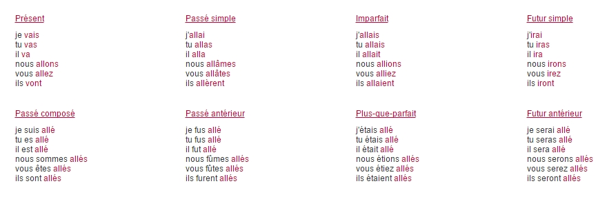

法语十日入门
第1课 | 第2课 | 第3课 | 第4课 | 第5课 | 第6课 | 第7课 | 第8课 | 第9课 | 第10课 | 法汉词典
|
3.1 动词的分组 3.2 第一组动词的现在时变位 3.3 第二组动词的现在时变位 3.4 第三组动词aller的现在时变位 3.5 第三组动词venir的现在时变位 3.6 第三组动词dire的现在时变位 3.7 第三组动词faire的现在时变位 3.8 如何查询法语动词的变位 |
3.1 动词的分组
法语动词分为三组。
第一组动词：以er结尾，全部是规则动词，例如parler（说话）。
第二组动词：以ir结尾，全部是规则动词，例如finir（结束）。
第三组动词：以er/ir/re结尾，全部是不规则动词，例如aller（去）、venir（来）、dire（说）、faire（做）。
3.2 第一组动词的现在时变位
变位规则是：去掉词尾er，分别加上e/es/e/ons/ez/ent。以parler（说话）为例：
parle [parl] 我说话
parles [parl] 你说话
parle [parl] 他/她/它说话
parlons [parlɔ̃] 我们说话
parlez [parle] 你们说话
parlent [parl] 他们/她们/它们说话
在六个变位中，有四个变位（1/2/3/6）的发音是相同的，都是[parl]。
Nous parlons français.（我们说法语。）
Ils parlent chinois.（他们说汉语。）
Il mange un hamburger.（他吃一个汉堡包。）
Elle mange une pizza.（她吃一块比萨饼。）
| 词汇表 |
| parler [parle] (v) 说话 français [frãsɛ] (a) 法国的 (m) 法国人，法语 chinois [ʃinwa] (a) 中国的 (m) 中国人，汉语 manger [mãʒe] (v) 吃 hamburger [ãbœrgœr] (m) 汉堡包 pizza [piza] (f) 比萨饼 |
3.3 第二组动词的现在时变位
变位规则是：去掉词尾ir，分别加上is/is/it/issons/issez/issent。以finir（结束）为例：
finis [fini] 我结束
finis [fini] 你结束
finit [fini] 他/她/它结束
finissons [finisɔ̃] 我们结束
finissez [finise] 你们结束
finissent [finis] 他们/她们/它们结束
在六个变位中，有三个变位（1/2/3）的发音是相同的，都是[fini]。
Je finis mes devoirs.（我做完我的作业。）
Tu finis tes devoirs.（你做完你的作业。）
Il grossit de trois kilos.（他胖了三公斤。）
Elle maigrit de trois kilos.（她瘦了三公斤。）
介词de的主要意思有两个，一是“的”（等于英语的of），一是“从”（等于英语的from），除此之外，还有许多其他意思，很难一一翻译成汉语。上面两个例句中的de表示计量，3.6小节两个例句中的de表示方式。
| 词汇表 |
| finir [finir] (v) 结束 mes [me] (a) 我的 devoir [dəvwar] (m) 作业 tes [te] (a) 你的 grossir [grosir] (v) 变胖 de [də] (prep) 的，从 trois [trwa] (num) 三 kilo [kilo] (m) 公斤 maigrir [megrir] (v) 变瘦 |
3.4 第三组动词aller的现在时变位
aller（去）的六个现在时变位是：
vais [vɛ] 我去
vas [va] 你去
va [va] 他/她/它去
allons [alɔ̃] 我们去
allez [ale] 你们去
vont [vɔ̃] 他们/她们/它们去
在六个变位中，有两个变位（2/3）的发音是相同的，都是[va]。
Je vais à la boutique.（我去商店。）
Il va à la banque.（他去银行。）
| 词汇表 |
| aller [ale] (v) 去 à [a] (prep) 到 boutique [butik] (f) 商店 banque [bãk] (f) 银行 |
3.5 第三组动词venir的现在时变位
venir（来）的六个现在时变位是：
viens [vjɛ̃] 我来
viens [vjɛ̃] 你来
vient [vjɛ̃] 他/她/它来
venons [vənɔ̃] 我们来
venez [vəne] 你们来
viennent [vjɛn] 他们/她们/它们来
在六个变位中，有三个变位（1/2/3）的发音是相同的，都是[vjɛ̃]。
Je viens de Paris.（我来自巴黎。）
Il vient de Pékin.（他来自北京。）
法语中有大约30个以enir结尾的不规则动词，例如tenir（拿着），它们的变位方法与venir相同。在法语词典上，这30个动词后面会标注[c16]（或其他数字），它表示这30个动词均采用词典附录部分《不规则动词变位表》中的第16种变位方法，也就是venir的变位方法。
下面是tenir的六个现在时变位，读者可以看出，它们的变位方法与venir相同。
tiens [tjɛ̃] 我拿着
tiens [tjɛ̃] 你拿着
tient [tjɛ̃] 他/她/它拿着
tenons [tənɔ̃] 我们拿着
tenez [təne] 你们拿着
tiennent [tjɛn] 他们/她们/它们拿着
Je tiens une cuillère.（我拿着一把勺子。）
Il tient une fourchette.（他拿着一把餐叉。）
| 词汇表 |
| venir [vənir] (v) 来 Paris [pari] (n) 巴黎（法国） Pékin [pekɛ̃] (n) 北京（中国） tenir [tənir] (v) 拿着 cuillère [kɥijɛr] (f) 勺子 fourchette [furʃɛt] (f) 餐叉 |
3.6 第三组动词dire的现在时变位
dire（说）的六个现在时变位是：
dis [di] 我说
dis [di] 你说
dit [di] 他/她/它说
disons [dizɔ̃] 我们说
dites [dit] 你们说
disent [diz] 他们/她们/它们说
在六个变位中，有三个变位（1/2/3）的发音是相同的，都是[di]。
Je dis oui de la tête.（我点头表示同意。直译：我用脑袋说“是”。）
Il dit non de la tête.（他摇头表示反对。直译：他用脑袋说“不”。）
| 词汇表 |
| dire [dir] (v) 说 oui [wi] (ad) 是 tête [tɛt] (f) 头 non [nɔ̃] (ad) 不 |
3.7 第三组动词faire的现在时变位
faire（做）的六个现在时变位是：
fais [fɛ] 我做
fais [fɛ] 你做
fait [fɛ] 他/她/它做
faisons [fəzɔ̃] 我们做（请注意ai的发音）
faites [fɛt] 你们做
font [fɔ̃] 他们/她们/它们做
在六个变位中，有三个变位（1/2/3）的发音是相同的，都是[fɛ]。
Je fais un gâteau.（我做了一个蛋糕。）
Il fait une tarte.（他做了一张馅饼。）
| 词汇表 |
| faire [fɛr] (v) 做 gâteau [gato] (m) 蛋糕 tarte [tart] (f) 水果馅饼 |
3.8 如何查询法语动词的变位
互联网上有多个查询法语动词变位的网站，例如www.conjugaison.com。在这些网站上，输入一个动词，即可显示所有时态、所有人称的变位，请看下图。上网方便的读者，可以使用这些网站。
上网不方便的读者，可以考虑将法语词典附录部分的《不规则动词变位表》复印下来，装订成一个小册子，随身携带，随时查询。
